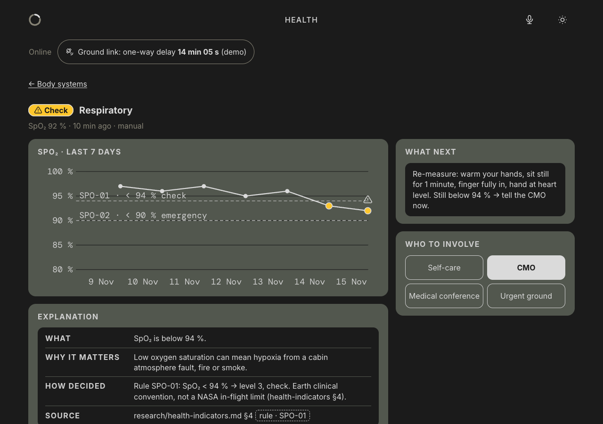

La app · pantalla de detalle
Qué
Tu SpO₂ está por debajo del 94 %.
Por qué importa
Puede indicar un fallo en el aire de la cabina.
Cómo se decidió
Regla SPO-01, con su fuente.
Qué hacer
Mide otra vez. ¿Sigue baja? → Oficial médico.
23 reglas legibles, cada una con su fuente. Deciden las reglas; la IA nunca diagnostica.

Six Dots Companion